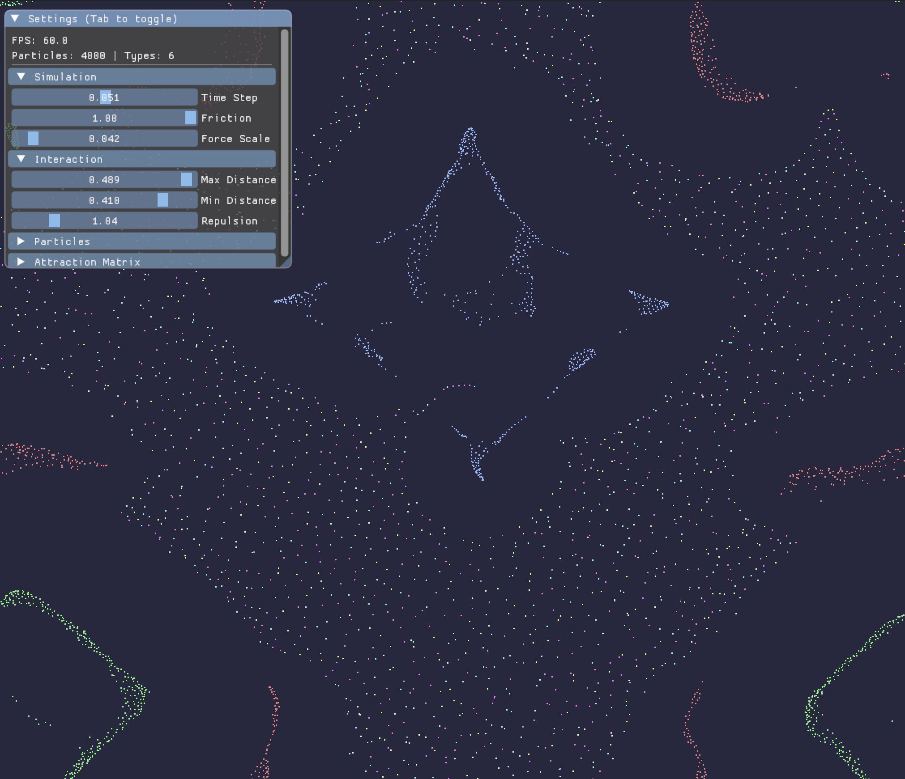

Loading...
Searching...
No Matches
Particle Life Engine
GPU-accelerated Particle Life simulation using Vulkan compute shaders. Multiple particle types interact via configurable attraction/repulsion rules, producing emergent life-like behavior.

Particle Life Engine
Prerequisites
- CMake 3.20+
- C++17 compiler
- Vulkan SDK
macOS
brew install vulkan-loader vulkan-headers molten-vk shaderc
Ubuntu
wget -qO- https://packages.lunarg.com/lunarg-signing-key-pub.asc | sudo tee /etc/apt/trusted.gpg.d/lunarg.asc
sudo wget -qO /etc/apt/sources.list.d/lunarg-vulkan-noble.list https://packages.lunarg.com/vulkan/lunarg-vulkan-noble.list
sudo apt-get update
sudo apt-get install vulkan-sdk libx11-dev libxrandr-dev libxinerama-dev libxcursor-dev libxi-dev libwayland-dev libxkbcommon-dev
Windows
Download and install the Vulkan SDK.
Build
cmake -B build -DCMAKE_BUILD_TYPE=Release
cmake --build build --parallel
Run
./build/particle-life-engine
On Windows: build\Release\particle-life-engine.exe
Docker
docker build -t particle-life-engine .
To run with display forwarding (Linux):
docker run -e DISPLAY=$DISPLAY -v /tmp/.X11-unix:/tmp/.X11-unix particle-life-engine
How It Works
- 4000 particles across 6 types, each with a random attraction/repulsion matrix
- A Vulkan compute shader calculates pairwise forces every frame
- Particles wrap around a toroidal space (edges connect)
- Close-range repulsion prevents collapse; medium-range attraction/repulsion drives emergent patterns